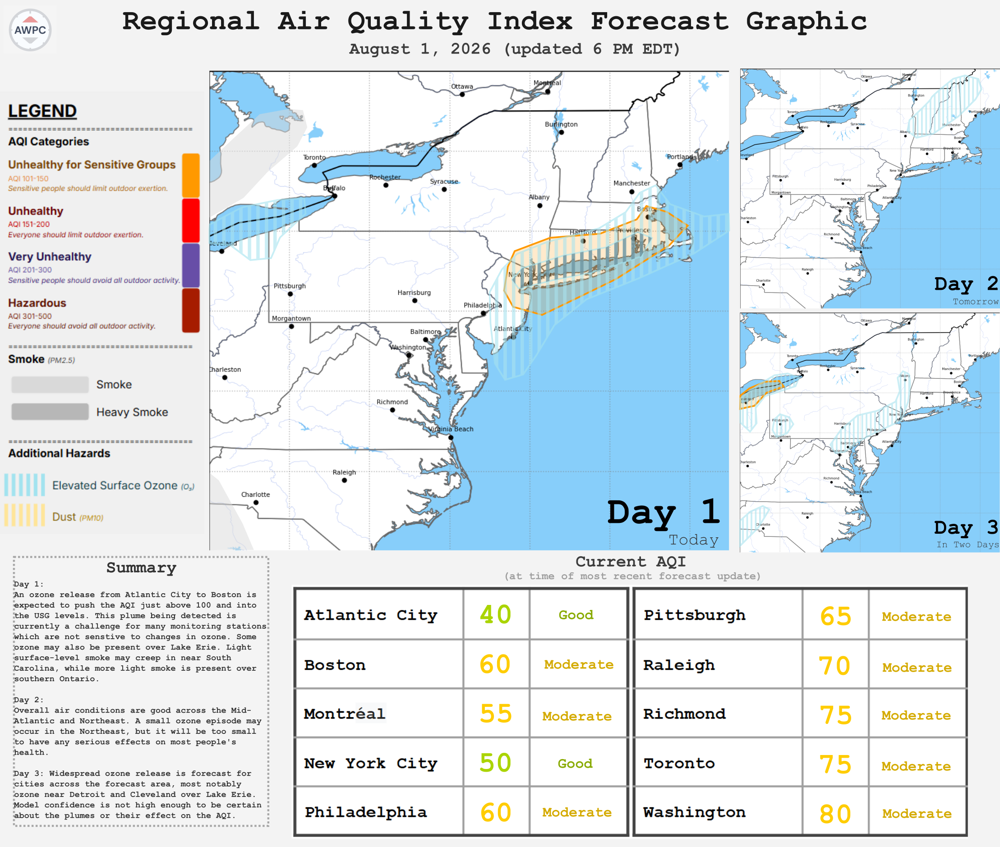

Independent Air Quality Forecasting
Updated: August 1, 2026 at 5:30PM EDT

AWPC currently provides air quality forecasts using weather models, observations, and meteorological analysis. Coverage area is located over the Northeastern United States and surrounding areas.